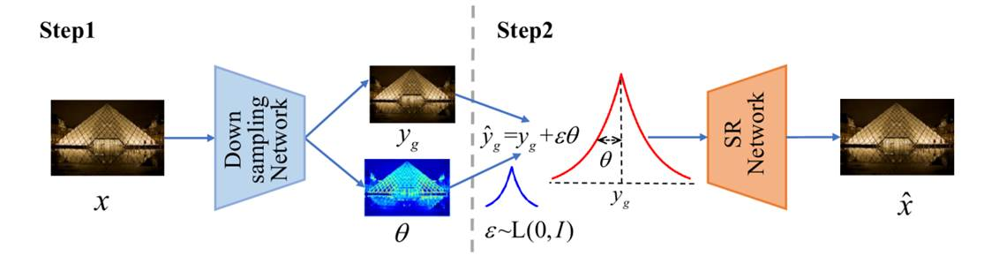
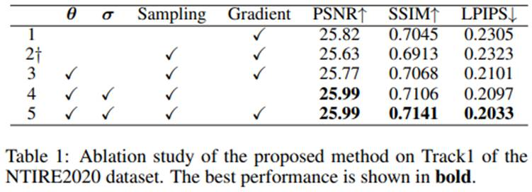
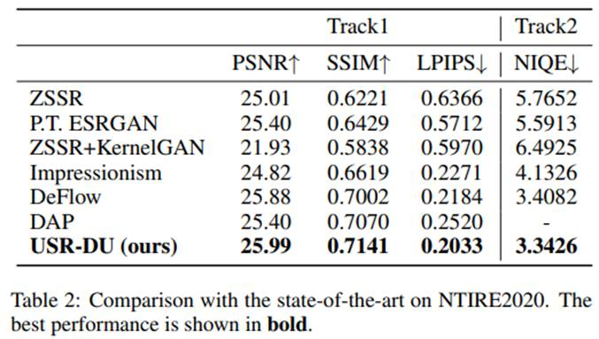
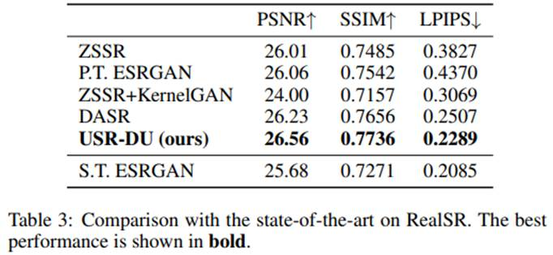
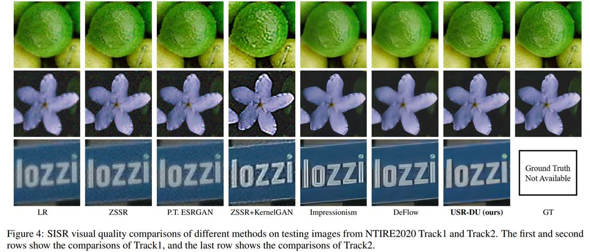
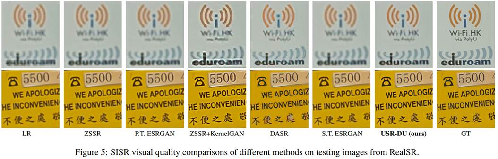

Learning Degradation Uncertainty for Unsupervised Real-world Image
Super-Resolution
Qian Ning1 Jingzhu Tang1 Fangfang Wu1 Weisheng Dong1* Xin Li2 Guangming Shi1
1School of Artificial Intelligence, Xidian University 2West Virginia University

Figure 1. The framework of learning degradation uncertainty for unsupervised real image super-resolution. The whole training process can be divided into two steps. The first step estimates the uncertainty of degradation ¦È (variance) of the learned LR images (means) in a downsampling network. In the second step, an HR image is paired with multiple LR images, which are sampled from the learned LR image (mean) and corresponding degradation uncertainty (variance). Those LR-HR pairs will be used to train the SR network.
Abstract
Acquiring degraded images with paired high-resolution (HR) images is often challenging, impeding the advance of image super-resolution in real-world applications. By generating realistic low-resolution (LR) images with degradation similar to that in real-world scenarios, simulated paired LR-HR data can be constructed for supervised training. However, most of the existing work ignores the degradation uncertainty of the generated realistic LR images, since only one LR image has been generated given an HR image. To address this weakness, we propose learning the degradation uncertainty of generated LR images and sampling multiple LR images from the learned LR image (mean) and degradation uncertainty (variance) and construct LR-HR pairs to train the super-resolution (SR) networks. Specifically, uncertainty can be learned by minimizing the proposed loss based on Kullback-Leibler (KL) divergence. Furthermore, the uncertainty in the feature domain is exploited by a novel perceptual loss; and we propose to calculate the adversarial loss from the gradient information in the SR stage for stable training performance and better visual quality. Experimental results on popular real-world datasets show that our proposed method has performed better than other unsupervised approaches.
 |
IJCAI 2022
Citation
Qian Ning, Jingzhu Tang, Fangfang Wu, Weisheng Dong, Xin Li, Guangming Shi, " Learning Degradation Uncertainty for Unsupervised Real-world Image Super-resolution ", in Proceedings of the Thirty-First International Joint Conference on Artificial Intelligence (IJCAI), 2021.
Bibtex
@inproceedings{ijcai2022p176,
title = {Learning Degradation Uncertainty for Unsupervised Real-world Image Super-resolution},
author = {Ning, Qian and Tang, Jingzhu and Wu, Fangfang and Dong, Weisheng and Li, Xin and Shi, Guangming},
booktitle = {Proceedings of the Thirty-First International Joint Conference on
Artificial Intelligence, {IJCAI-22}},
publisher = {International Joint Conferences on Artificial Intelligence Organization},
editor = {Lud De Raedt},
pages = {1261--1267},
year = {2022},
month = {7},
note = {Main Track},
doi = {10.24963/ijcai.2022/176},
url = {https://doi.org/10.24963/ijcai.2022/176},
}
Download
 |
Results





Contact
Qian Ning, Email: ningqian@stu.xidian.edu.cn
Jingzhu Tang, Email: tangjingzhu@stu.xidian.edu.cn
Fangfang Wu, Email: ffwu_xd@163.com
Weisheng Dong, Email: wsdong@mail.xidian.edu.cn
Xin Li, Email: xin.li@mail.wvu.edu
Guangming Shi, Email: gmshi@xidian.edu.cn